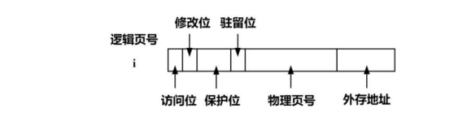
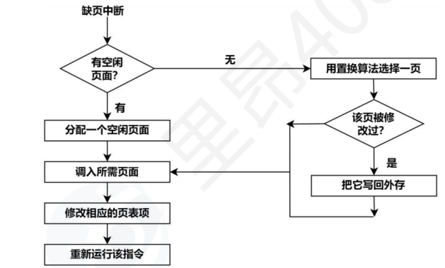
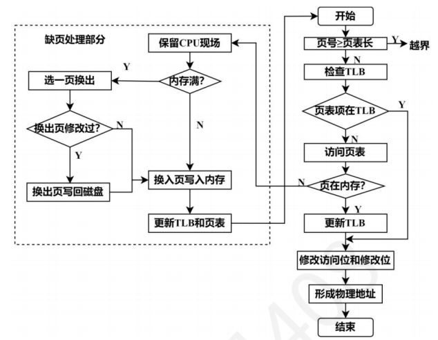

3.4 虚拟分页管理
利用局部性原理，使得内存可以尽可能装入更多的程序，从而提高系统的并发性。
重点 易错 易混
1. 本质
传统的内存管理，要求进程的逻辑地址空间必须要小于物理地址空间；而利用程序访问的局部性原理，使用虚拟分页管理，让内存可以容纳更多的程序，从而提高系统的并发性。 从而需要满足请求调入功能和置换功能。
- 多次性：作业允许多次调入内存
- 对换性：联系进程管理中的中级调度
- 虚拟性：是以多次性和对换性为基础，==从而扩大了“内存”==
2. 结构/组成
虚拟分页管理是以分页管理为基础，增加了==请求分页==等功能。 需要硬件支持和软件支持。进程运行时，使用==MMU==进行地址映射。本小节讨论硬件支持。
请求页表机制
在分页管理的页表基础上，增加了：
- 外存地址：用于页面置换时，找寻该页对应的磁盘地址
- 驻留位：判断该页是否处于内存中
- 保护位：设置不同的权限
- 修改位：用于页面置换，作用与其算法，同时也判断是否向磁盘写入
- 访问位：用于页面置换算法
注意当给出逻辑地址后，计算其物理地址除了使用分页管理中的计算方法，还有
1物理地址=页框号*页面大小+页内地址

缺页中断
当要访问的页没在没在内存中，由MMU发出缺页中断，属于==内部异常==。该进程会发生阻塞，当IO操作结束后，该进程变为就绪态。 发生页面置换时，所修改的页表项 旧页表项：将驻留位置为0 新页表项：驻留位和访问位置为1 当处理结束后，会重新执行该指令。

具有快表的地址变换

内存分配
联系上节中所说的==物理页表==，OS为每一个进程分配的页框集合称为==驻留集==。 显然当驻留集越小，并发性越高，但缺页中断率也越高。 驻留集越大，当超过某个数目后，改善缺页中断率不明显（进程运行时，可能仅仅需要某几个页，不需要很多的页），但并发性降低。 从而有内存分配和页面置换两方面的考虑。
- 内存分配 固定分配：要求从始至终，进程获得的驻留集大小不变。 可变分配：进程运行时，驻留集大小发生了改变。 物理块分配： 1. 平均分配：容易导致部分进程获得的物理块一直没有利用到；而有的进程发生中断。 2. 按比例分配 3. 按优先级分配
- 页面置换 全局置换：允许在除了驻留集外，选择空白物理块分配给该进程。从而，全局置换只能和可变分配配对。 局部置换：只允许在自己的驻留集内进行置换。
- 固定分配局部置换
- 可变分配全局置换：发生置换时，就会增加驻留集大小。最终中断率改善不明显，而系统并发性降低。
- 可变分配局部置换：当频繁发生中断时，会增大驻留集。但是该方法会增大系统开销。
页面调入
时间：
- 预调页：利用局部性原理，发生在进程运行前
- 请求调页：发生在运行期间，每次仅调入一页
地点：
- 交换区：在运行前，将所有文件从文件区复制到交换区中。
- 文件区：对于不会发生修改的文件都在文件区；发生修改的文件则在交换区。
- UNIX方式：起初都在文件区，后续发生在交换区。
逻辑容量与最大容量
- 虚拟内存包含主存和外存，所以逻辑容量为主存+外存容量
- 将虚拟地址空间看为一个虚拟内存，从而最大容量就是虚拟地址空间的大小
3. 核心操作
- 后续补充
4. 常考点
- 后续补充
5. 易错点
- 注意在虚拟内存中，一定使用的是虚拟分页/分段功能，不是分页存储管理。
- 虚拟内存包括主存和部分外存。
- 驻留集指的是物理页，而工作集指的是逻辑页。
6. 关联知识
- 后续补充
7. 真题记录
- 后续补充